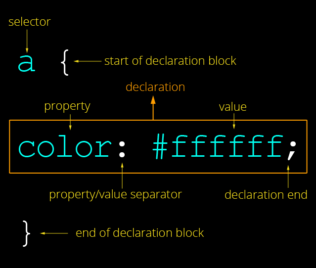
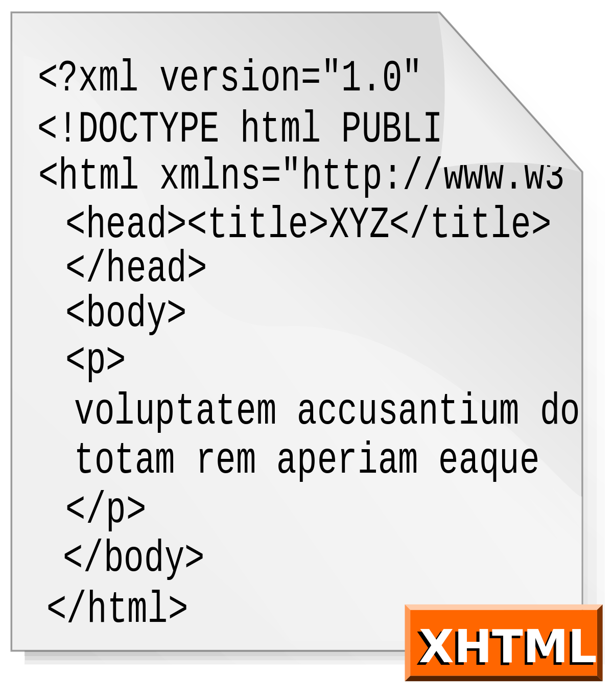
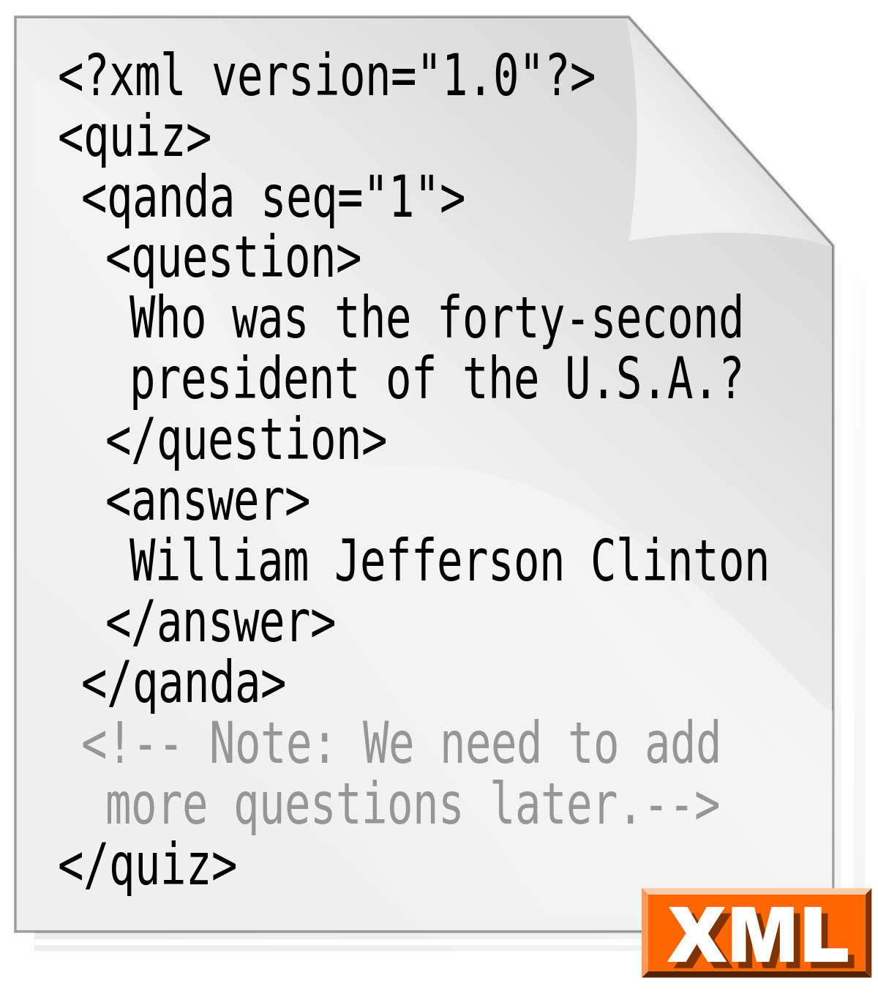
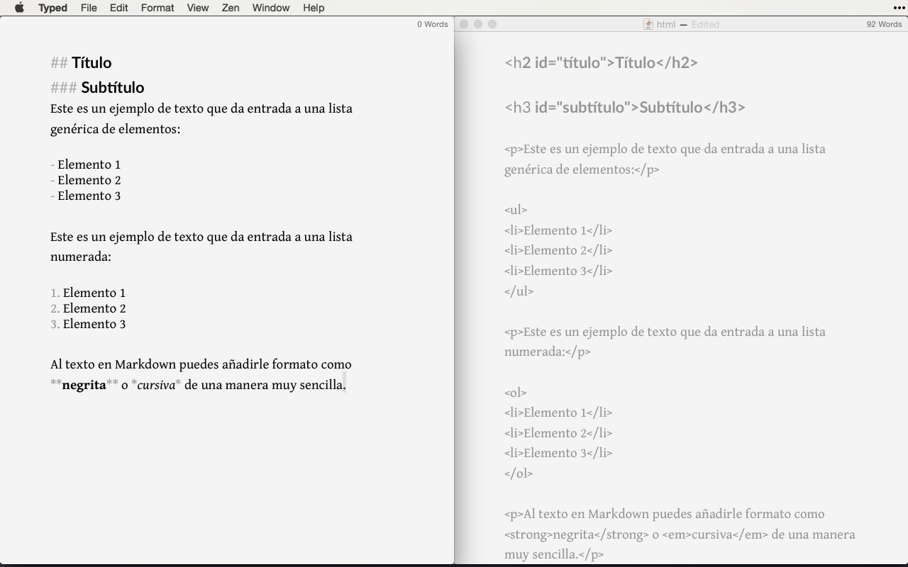
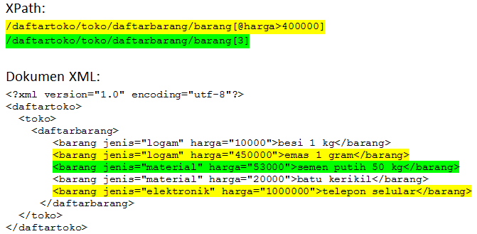
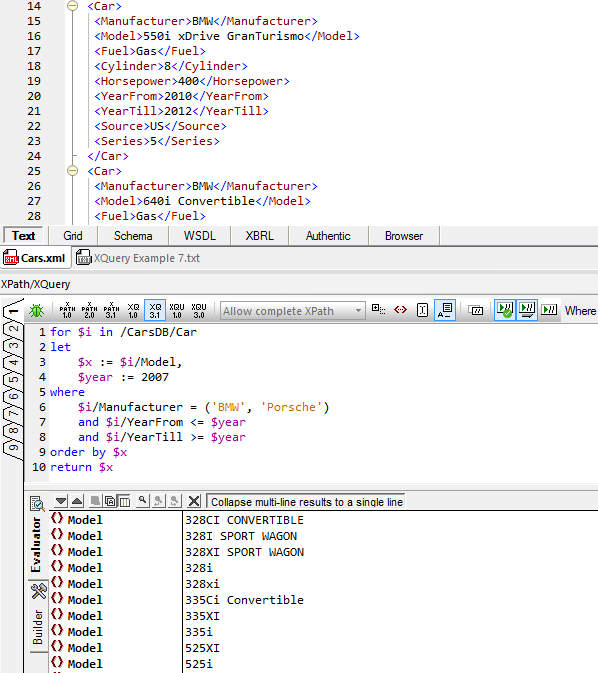

PÁGINA 2
Caracteristicas:
HTML:
HTML es un lenguaje marcado que nos permite indicar la estructura de nuestro
documento mediante etiquetas.
Ofrece gran adaptabilidad, una estructuración lógica y es facil de interprear por
humanos como por maquinas.
Se trata de un fichero de texto, y solo se necesita un editor como el bloc de notas
para generar un documento HTML.

CSS:
Complementariedad con documentos estructurados: Las CSS complementan a
otros documentos proporcionando información de estilo con poco o ningún impacto
sobre el sistema de marcas
Independencia del vendedor, la plataforma y el dispositivo: Las hojas de estilo
permiten a los documentos mantener su independencia del vendedor, la plataforma
y el dispositivo.
Mantenibilidad: Los responsables de sitios en la Web pueden simplificar el
mantenimiento y conservar un estilo y un efecto consistente a todo lo largo del sitio.
Simplicidad: CSS2 es más complejo que CSS1 pero sigue siendo un lenguaje de
estilo simple, humanamente legible y posible de escribir.
Rendimiento de la red: CSS proporciona una compacta codificación para
presentar los contenidos.
Flexibilidad: Las CSS pueden ser aplicadas al contenido de varias maneras
Riqueza: Aumentan la riqueza de la Web como medio de expresión con sus
abundantes efectos de procesamiento.
Combinación con lenguajes alternativos: Las propiedades de CSS conforman
un sólido modelo de aplicación de formatos para presentaciones visuales y
auditivas.

XHTML:
Los documentos XHTML son conformes a XML. Como tales, son fácilmente
visualizados, editados y validados con herramientas XML estándar
Los documentos XHTML pueden escribirse para que funcionen igual o mejor que lo
hacían antes tanto en las aplicaciones de usuario conformes a HTML 4.0 como en
los nuevas aplicaciones conformes a XHTML 1.0.
Los documentos XHTML pueden usar aplicaciones que se basen ya sea en el
Modelo del Objeto Documento de HTML o XML[DOM].
A medida que la familia XHTML evolucione, los documentos conformes a XHTML
1.0 estarán más preparados para interactuar dentro de y entre distintos entornos
XHTML.

XML:
Permite la creación de etiquetas propias y permite asignar atributos a las etiquetas
En un documento XML la estructura y el diseño están completamente separados.
XML se almacena en formato texto (no binario) lo cual hace que los documentos
sean directamente entendibles. Es decir, los documentos tienen una estructura
entendible tanto por los ordenadores como por las personas.
Cada documento incluye metadatos sobre sí mismo, lo cual facilita la tarea de los
motores de búsquedas en la web, ya que devolverán respuestas más adecuadas y
precisas.
Permite la exportabilidad a otros formatos de publicación de datos.
XML es un estándar abierto no sujeto a ningún tipo de licencia
XML permite la internacionalización, es decir puede trabajar con cualquier conjunto
de caracteres, entre ellos el juego de caracteres UNICODE (utf-8).
XML utiliza reglas de generación concretas y, por tanto, los documentos son
fácilmente procesables.
XML permite compartir información entre sistemas o fuentes de datos
heterogéneas.

MARKDOWN
Emplea texto plano, procurando que sea legible pero consiguiendo que se
convierta en XHTML correctamente formateado.
Markdown es un lenguaje de marcado ligero parecido al que se emplea en muchas
wikis y basado originalmente en convenciones existentes en el marcado de los
correos electronicos.

XPATH:
Lenguaje sencillo con sintaxi no XML
Permite acceder/consultar partes de un documento XML
Trabaja sobre el arbol del documento XML
Los documentos se organizan la información de manera jerárquica en función de
las etiquetas utilizadas.

XQUERY:
Se parece a SQL.
Se parece a XPath con el que comparte el modelo de datos y soporta las mismas
funciones y operadores.
Tiene el mismo esquema de datos atómicos de XML.
Permite definir funciones de usuario
Se basa en claúsuslas FLWOR
